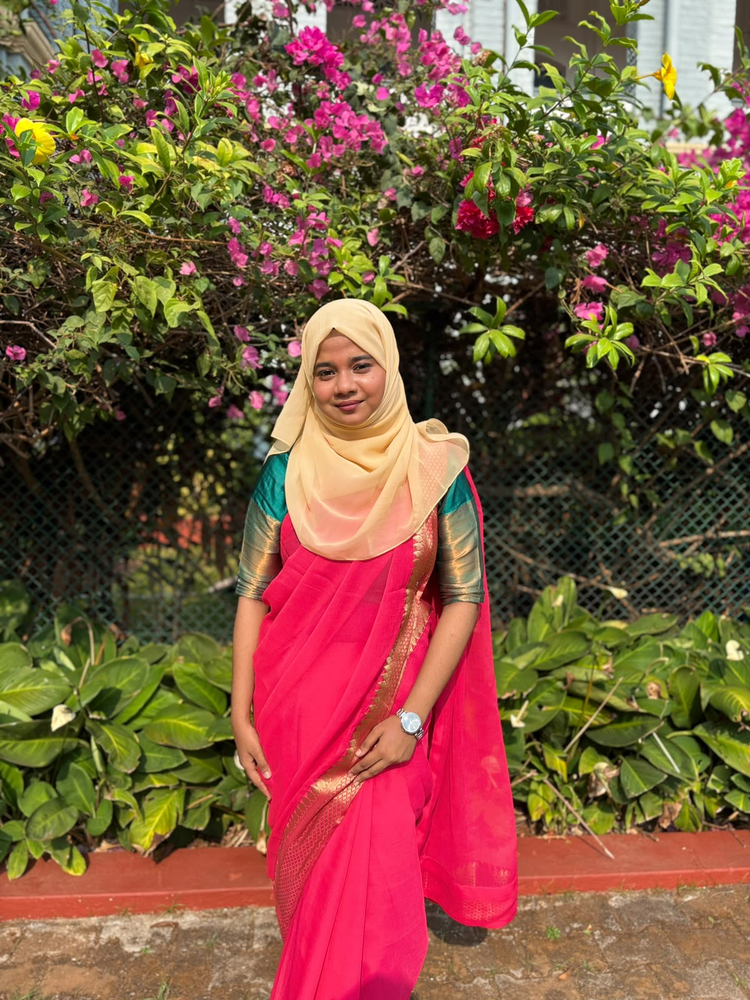

8.02/10
BCA CGPA .
I’m S. Afra Parveen, Student passionate about full-stack development, AI-powered applications, and creating practical digital solutions.
From web applications and data-driven workflows to coordinating large-scale university events, I enjoy turning complex challenges into structured, useful outcomes.

Profile
Current focus
Building useful digital systemsBCA CGPA .
IT Fest registrations coordinated for Composite 2025.
Blood donors referenced in the Blood Donation Management System project.
01 / ABOUT ME
I'm an MCA student passionate about technology, problem-solving, and software development. Currently exploring full-stack development and building my programming skills. I enjoy learning new technologies, exploring creative ideas, and turning them into practical solutions. Always eager to learn, grow, and build something meaningful.
Alongside building web applications, I’ve gained practical experience in communication, data management, placement operations, and coordinating university events. These experiences have taught me to approach problems with structure, attention to detail, and a focus on delivering reliable outcomes.
I enjoy exploring technologies, learning by building, and creating solutions that connect technical functionality with real-world needs.
Building responsive web applications, REST APIs, and database-backed solutions.
Exploring AI-powered applications, Python-based data analysis, and practical data tools.
Coordinating people, registrations, communication, and operations in large-scale university initiatives.
Teamwork, professional communication, event coordination, and problem-solving are integral to how I work.
02 / TOOLKIT
03 / SELECTED WORK
A selection of web applications exploring AI, healthcare support, social impact, and business workflow management.
Built an AI-driven medical support application that analyzes user-entered symptoms to provide probable condition insights, precautions, and guidance on seeking medical care.
Developed a donor registration and blood matching system to support efficient blood request management and coordination, with 500+ blood donors referenced in the project.
Created a full-stack garage management platform covering vehicle registration, service tracking, inventory, billing, and service history for cars and bikes.
04 / EXPERIENCE
August 2025 – Present
St Aloysius Deemed to be University, Mangalore
2024 – 2025
Composite 2025
In progress
2024
2024 – 2025
2026
05 / IMPACT
Academic Performance
CGPA BCA.
Large-Scale Operations
Student registrations coordinated across placement and college events.
National-Level IT Fest
Registrations managed for Composite 2025.
Student Leadership
Members represented through the Computer Animation Association.
Social Impact Project
Blood donors referenced and shortlisted as a finalist in a college-level technology competition.
06 / EDUCATION
Bachelor of Computer Applications (BCA)
CGPA: 8.02/10.0 .
Pre-University Course
Academic performance: 85.5%.
SSLC — KSEEB
Academic performance: 73.12%.
07 / CERTIFICATIONS
Data Analyst
Power BI
AI Power Tools
Bootstrap: Web Design
Event Management
08 / GET IN TOUCH
I’m interested in opportunities where I can apply my development skills, continue learning, and contribute to meaningful projects.